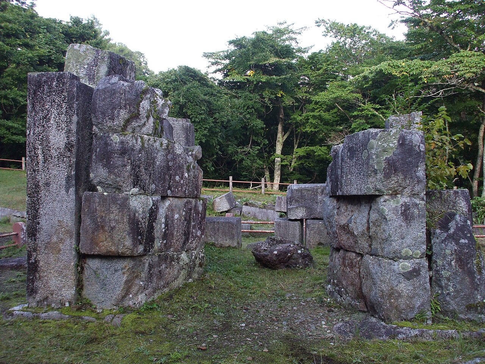
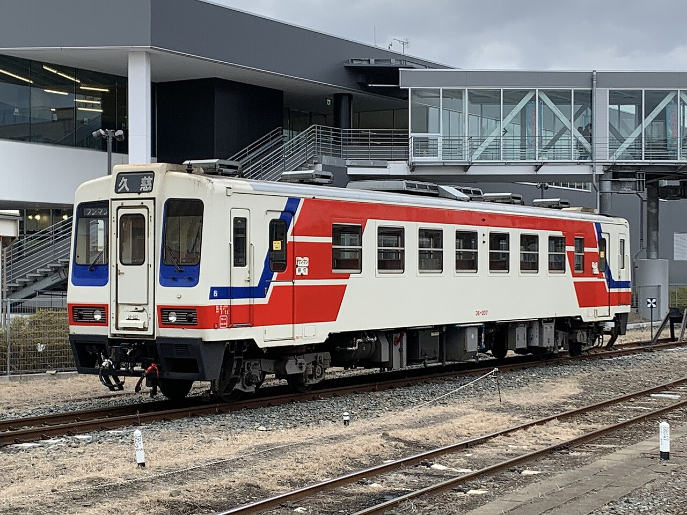
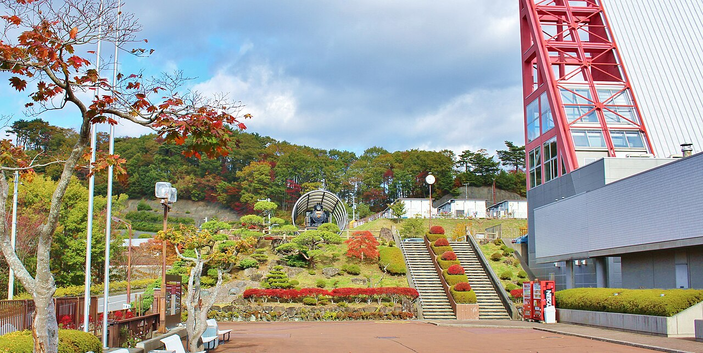

橋野の森の中に、その石組みはあった。苔むした花崗岩が人の背丈ほどに積まれ、崩れた隙間の向こうにも石が転がる。ここが高炉の跡だと言われなければ、古い石垣の残りにしか見えないかもしれない。けれど、この囲いの中でかつて火が燃え続け、鉄が生まれていたのだと思うと、ただの石の山には見えなくなった。

ここまでの道のりを振り返る。盛駅から三陸鉄道リアス線に揺られて約36.6km、窓の外では海と山が交互に現れた。トンネルを抜けるたび、また入り江が開ける。その繰り返しが、三陸という海岸の形そのものだと思った。大船渡も海沿いの街だが、釜石に近づくにつれて、景色の奥に少しずつ鉄の気配が混ざってくる。港の形、山の切り立ち方、その向こうにあるはずの製鉄所。街の輪郭そのものが、鉄と一緒に生きてきた街のものだった。

この街の始まりにいるのが、盛岡藩士の大島高任だ。大橋で日本初の洋式高炉による出銑に成功し、橋野では1858年に仮高炉が操業を始めたという。その歩みは2015年、「明治日本の産業革命遺産」のひとつとして世界遺産になった。目の前の石組みは、その始まりの姿を残すものだ。
鉄の歴史館には、橋野の高炉の実寸大模型があるそうだ。家くらいの大きさの炉が、山の中に立っていた。想像すると少しぞくっとした。私はいつも、火を小さく安全に囲う側の存在だ。かまども、給湯のボイラーも、火は家の中で慎ましく燃えるものだった。せいぜい数十年の単位で、住む人の暮らしを温めるための火だ。けれど高炉の火は違う。街そのものを作るための火だった。けれど高炉は違う。火そのものを住まわせるために建てられた家だ。燃えることが、その家の生きる意味のすべてだった。

港のそばでは釜石ラーメンのことを考えた。製鉄所の人たちが短い休憩でさっと食べられるように工夫された味が、今も市内に30店以上で続いているという。鉄を作る人たちの昼ごはんが、そのまま街の味として残った。家も同じだと思う。住む人の暮らしの癖が染みついて、その家らしくなっていく。今日の釜石で、私の中の「家」の意味が少し広がった。火を囲うだけが家ではない。何を燃やし、何を生むかまで含めて、家なのだった。
出典：三陸鉄道リアス線の路線情報、橋野高炉跡の解説、釜石市観光情報。
💬 コメント